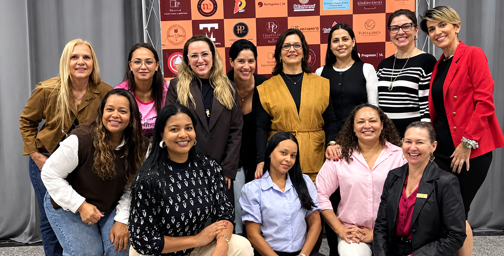

Teste de aptidão empreendedora
Avalie seu potencial de gestão, liderança e resiliência no mercado de gastronomia de Mato Grosso do Sul. Responda uma pergunta por vez.
Pergunta 1 de 100 respondidas
Conheça as histórias das empreendedoras locais, explore seus produtos artesanais e teste seus conhecimentos sobre a cultura gastronômica sul-mato-grossense.
Nove histórias de mulheres que fazem a gastronomia de Mato Grosso do Sul.
Durante o 2º bimestre de 2026, os estudantes dos 2º anos do Ensino Médio desenvolveram, no componente curricular Desenvolvimento Local, o projeto “Saberes e Sabores Regionais”. A atividade destacou como a gastronomia regional reflete a cultura e a economia de uma população. Os estudantes pesquisaram pratos típicos, criaram cartazes virtuais com auxílio da Inteligência Artificial (IA) e participaram de um fórum no Padlet, compartilhando opiniões e valorizando a importância histórica, cultural, social e econômica da gastronomia para o desenvolvimento local.
Acessar o fórum no Padlet
Um encontro de mulheres que compartilham experiências, fortalecem conexões e criam oportunidades de negócios. Uma rede de parceria, inspiração e apoio mútuo que valoriza o protagonismo feminino e fortalece o empreendedorismo.
Juntas, crescemos e conquistamos mais!
Responda às perguntas sobre a gastronomia e as tradições de Mato Grosso do Sul para liberar as 14 etapas, uma de cada vez.
Saberes, sabores e empreendedorismo feminino: desenvolvimento de uma plataforma digital de difusão gastronômica e incentivo ao empreendedorismo.
A gastronomia regional preserva a identidade cultural e fortalece a economia local, mas muitas empreendedoras do setor ainda enfrentam barreiras no acesso a ferramentas digitais para divulgar seus negócios.
O projeto desenvolveu uma plataforma web acessível para dar visibilidade a esses saberes e às histórias de mulheres locais, com Tecnologias Digitais de Informação e Comunicação (TDIC) e os princípios da Cultura Maker.
Pesquisa aplicada, de abordagem qualitativa e caráter exploratório e descritivo, fundamentada na Cultura Maker (aprender fazendo).
Três etapas: levantamento bibliográfico e sistematização dos saberes e perfis de empreendedoras; desenvolvimento da plataforma web, com Inteligência Artificial e trilha interativa; análise qualitativa das contribuições da plataforma para a valorização da memória cultural e o incentivo ao empreendedorismo feminino.
A proposta integrou os eixos de cultura, tecnologia e mercado e mostrou que a Inteligência Artificial e a metodologia Maker são eficazes no ambiente escolar para promover o engajamento dos estudantes e a inclusão digital.
A plataforma se consolidou como instrumento de inovação social e de valorização da memória gastronômica regional, ampliando a visibilidade e o fortalecimento do empreendedorismo feminino em Três Lagoas.
BRASIL. Ministério da Educação. Base Nacional Comum Curricular. Brasília: MEC, 2018.
NATIONS, United. Transforming our world: the 2030 Agenda for Sustainable Development. New York: UN Publishing, 2015. (Apoio aos ODS 5 e 8).
VALENTE, José Armando. A integração das tecnologias na educação: a prática pedagógica e o desenvolvimento do pensamento computacional. Revista e-Curriculum, São Paulo, v. 16, n. 1, p. 1-25, 2018. (Fundamentação sobre Cultura Maker e TICs).
ZANINI, Maria Célia. Gastronomia, patrimônio e desenvolvimento local: reflexões sobre saberes e sabores. Revista Memória em Rede, Pelotas, v. 11, n. 21, p. 45-62, 2019.
Avalie seu potencial de gestão, liderança e resiliência no mercado de gastronomia de Mato Grosso do Sul. Responda uma pergunta por vez.